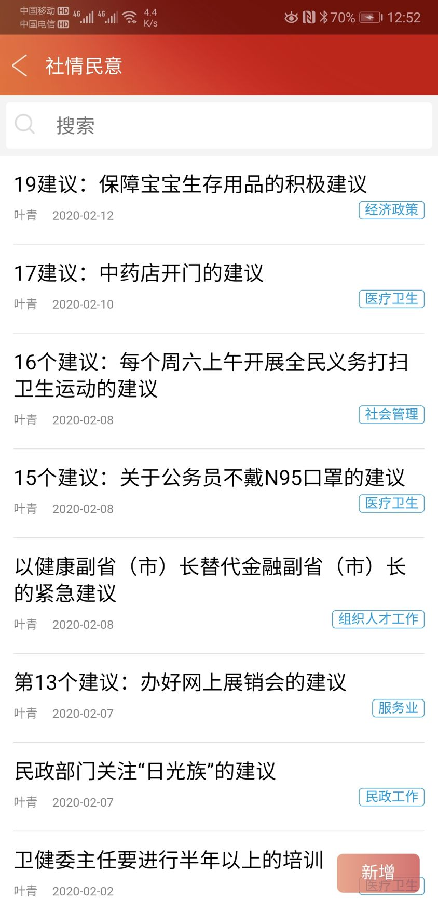

武汉战纪（十五）
原文链接 备份链接 封城日久，从春节前为了年节准备的囤货富可敌国，到近日，也已经捉襟见肘。 大概有二十年，不曾这样需要仔细盘算吃什么。 每天打开冰箱，都要焦虑片刻，菜一点点的少下去，能做的花样也一点点少下去，终于体会到了什么叫坐吃山空。 …
岛语
2019年9月10日，恰巧在教师节这一天，湖北正和岛首位蓝色岛邻正式登岛！他是湖北省政协常委、省统计局副局长、中南财经政法大学教授、博导，横跨政、学两界，极其关注民营企业的发展；他被中国网民称为“中国最具个性官员”，曾连续8年给全国两会上书，推动“公车改革”，每年减少公车开支近千亿元。
如今，特推出叶青老师的专栏，记录其所闻所见或本人所关注的相关话题文章。
*作者 | 叶青 正和岛蓝色岛邻*
排版 | 张珍珍 正和岛湖北岛丁
1、一篇热文怎么炼成？
这两天，我找回当全国人大代表的感觉。
2003-2012年，我当了十年的全国人大代表，在北京开会期间，几乎天天都有采访。
2013年到现在，当湖北省政协常委，采访少多了。
我有“三不拒绝”：不拒绝采访，不拒绝讲座，不拒绝约稿。所以在互联网上一直有声音。
进入疫情20天，天天有日记。最近5天，来采访的媒体越来越多。可能有人不高兴，这与我没有关系。1998年我开始建议公车改革，得罪人也无所谓。我得罪的人，以百万为单位。
14日0点24，我看了一眼微信，红星新闻采访的文章出来。
《坚持写“疫情日记”的湖北官员：若提前五天“封城”，可能情况会好很多》。
14日十几家报纸采访我，今日头条、百度，也来联系我。
我终于找回了当全国人大代表的感觉。
我是三合一之人：人大代表（政协委员）、党外干部、网络人士、大学老师。
我必须这么做。否则党外人士就没有必要存在。
2、从一天分析一个问题到日记
三年前，我在微信公众号有专栏，一天分析一个财经问题。已经形成习惯。2年前，我的微信公众号叫《中部之声》，分为叶青看财经、叶青看数据。一天两文。
有朋友在22日建议我，记录武汉的事情。
所以，23日我的第一篇日记出来，天天不断。
3、在日记基础上再提建议
20天来提了19个建议。
以下图来自湖北省政协APP的政协委员社情民意目录。



这些建议，我通过四个渠道向上交：民进省委会、民进中央（我是民进中央特约研究员）、省政协APP、微信小程序国务院客户端。
四个途径，总有一个会中吧。
有了日记的基础，才会有建议的提出。
举个例子。关于超市管理，从5个建议增加到九个建议。
我1月28日提了一个建议：关于加强超市管理的六个建议：
1月27日下午4点，我与夫人戴着口罩到了中南财大津发小区不远的龙城社区的中百超市。
超市里的情况不好。
两个3-4岁的小孩坐在购物车里，妈妈推着购物。小孩虽然戴着口罩，但是鼻孔、嘴巴都露出来。大门口没有人工或者智能测温仪。排队交款的人挨得太近……
因此，我建议：
一是小超市应该有人工测温员，中型超市以上应该有像高铁站、地铁站一样的智能测温仪。每个大门安装两台，从不同角度对进出的顾客测温。
二是10岁以下、70岁以上的人、孕妇在“新型肺炎”期间不要去超市等人多的地方。同时控制超市内的人数。
三是除了口罩，建议戴一次性手套、鞋套。因为选菜、开门、付款等都要接触物品或者把手。
四是交款时保持一米距离。银行、机场都是这样，超市也可以这样。
五是把用过的口罩、一次性手套，放在门口专门的袋子里，外衣裤在阳台上晾晒，鞋子不要入家门。
六是推广网上菜场。1月27日起，以华中冷链港和武汉肉联冷库为依托，武汉万吨冷链物流有限公司联手“饿了么”，推出“万吨通”网上菜场。武汉市民通过支付宝登录“饿了么”，或者直接登录“饿了么APP”，点击“买菜”即可逛菜场下单，次日上午即可在就近自提点提货。“万吨通”网上菜场在武汉市内已设立了上百个自提点，并且还在继续增设中。
七是调整称重员以及称重系统。现在是蔬菜区域的称重员很忙，而水果、肉类的称重员没有什么事情。建议加以链接。应该都可以称重。
八是尽量打包销售，事先把菜包好、称好，拿了直接付钱。减少排队称重的时间。
九是尽量使用微信、支付宝等自助计费系统。
最新的建议：保障宝宝生存用品的紧急建议：
由于有些商店的关门，不仅大人用品紧张，小人的用品也紧张。湖北母婴协会建议：
（1）积极反映，引起全社会重视，尽快将宝宝用品（尤其是奶粉之类的刚需产品）列入民生物资，尽快出台相关办法、保障母婴用品物流的通畅。
（2）对有条件营业、送货上门的母婴门店和店员提供严格防护措施。只有从业者感染风险降低，物资供应才能持续，才不会好心办坏事给社会添乱。
（3）重灾区消费者珍惜政府和全社会为母婴刚需产品挤出的物流资源和防疫资源，在专业人士指导下，一次性合并购买，一次性合理囤货，减少配送次数，降低从业人员的感染风险。同时，非常时期希望消费者不要超量囤货，引发非正常的缺货。
（4）其他疫情尚不严重的地区在物流和配送还比较宽松的情况下，应引起警惕，年轻父母应提前囤货，存够口粮，彻底掐灭宝宝断粮的风险。
4、一天满当当
早上7、8点起床，提前有了退休的感觉。
上午看资料。
中午写日记。把一天一本书的音频推到所有的朋友圈，这样的话，有近1万人中午在听我推荐的书。25分钟，介绍一本书的核心内容。
下午写约稿。
晚上给企业家直播，讲解经济形势。
就是这样。

活着，成为当下中国民营企业的最高纲领！
如何打赢2020“生死之战”？她亲历阿里抗击非典，并带领创业酵母团队用七天时间快速完成业务转型和架构调整。
CEO如何深度思考与认知迭代，听张丽俊老师倾囊相授（识别图中二维码，即可收听）
**报名咨询：正和岛张珍珍**
18511280817

原文链接 备份链接 封城日久，从春节前为了年节准备的囤货富可敌国，到近日，也已经捉襟见肘。 大概有二十年，不曾这样需要仔细盘算吃什么。 每天打开冰箱，都要焦虑片刻，菜一点点的少下去，能做的花样也一点点少下去，终于体会到了什么叫坐吃山空。 …
原文链接 备份链接 这是我们一个九十度的鞠躬：对不起，给大家添麻烦了！ 第一个隔离期14天到了，武汉疫情依然严峻。看来不要再存一丝一毫幻想了，必须继续隔离！铁的隔离！人与人绝对无接触的隔离，应该是当务之急重中之重了。然而，吃食没有了。 人 …
原文链接 备份链接 作家成向阳的妻子是抗疫一线的医护人员，他记录下这些天来与妻子“相隔两地”的日常，虽是分别生活着，却又像始终在一起，一起坚守着，等春天到来。 1月29日 | 晴 上午8点，她套好蓝色无纺布隔离衣、戴好桶帽和护目镜，捂紧三 …
原文链接 备份链接 作者：冯超 来源：*商业人物*（ID：*****biz-leaders）* 那天晚上，新东方创始人俞敏洪和很多网友一样，等待着李文亮的消息。等到凌晨一点，太疲惫，就睡着了。早上，他看到消息后，“心一下子坠到谷底，失魂落 …
原文链接 备份链接 邵阳日记 _ 小新 _ _ _ _ _ _ 我的家在湖南省邵阳市邵阳县塘田市镇，1月10日，我从广州的学校回到老家。本来准备好过一个安逸的寒假，结果突如其来的疫情让周围的一切都不再平静。 _ _ _ _ ●口罩● _ …